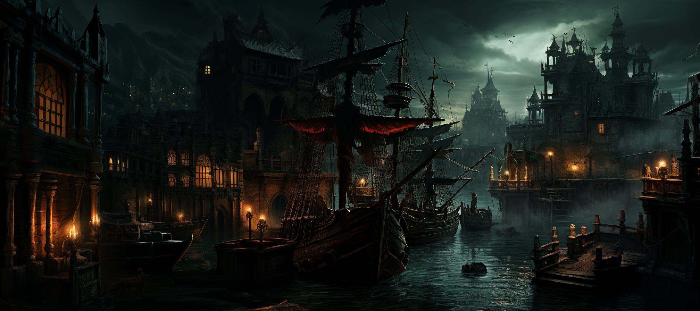

|

Bahía NegraEnclavada como una joya salvaje entre las olas traicioneras de los reinos, Bahía Negra emerge como un bastión pirata donde la promesa de oro y una vida en alta mar atraen a los rufianes más intrépidos y despiadados. Aquí, la jerarquía pirata rige cada callejón, y la lealtad se mide en doblones y en la astucia para sobrevivir en las aguas traicioneras de Fraegyr. La vida en Bahía Negra es tan desafiante como las turbulentas olas que la rodean. Los mares de Fraegyr están poblados por horrendas criaturas y tormentas que podrían hacer retroceder incluso al más temerario de los navegantes. Sin embargo, los habitantes de Bahía Negra han desarrollado un poderoso dominio naval, permitiéndoles navegar las aguas con destreza y saquear zonas costeras sin temor a represalias significativas. Entre sus calles bulliciosas y tabernas llenas de cantos de marineros, Bahía es un refugio para aquellos que buscan una vida libre y desenfrenada, aunque plagada de peligros constantes. La ciudad, con su aura de misterio y peligro, se erige como un punto de libertad en medio del vasto océano de incertidumbre que es Fraegyr. |
| Galeria |
|---|
|
|